(Tut 1) Deep Learning Deep Inelastic Scattering at EIC
Contents
(Tut 1) Deep Learning Deep Inelastic Scattering at EIC#
Credits:
Heavily based on:
Reconstructing the Kinematics of Deep Inelastic Scattering with Deep Learning by Miguel Arratia, Daniel Britzger, Owen Long, Benjamin Nachman arXiv:2110.05505 — [code, dataset]
Deeply Learning Deep Inelastic Scattering Kinematics, by Markus Diefenthaler, Abdullah Farhat, Andrii Verbytskyi, Yuesheng Xu,arXiv:2108.11638
Training for H1 rapgap MC with reconstructed observables as input.#
This uses a single DNN with all inputs (electron, HFS, photons)#
Adjust Huber delta to 0.01.
%load_ext autoreload
%autoreload 2
from google.colab import drive
drive.mount('/content/drive')
Mounted at /content/drive
# Make sure GPU runtime is enabled.
# Runtime -> Change Runtime Type -> Hardware Accelerator -> GPU
# You will likely only have a T4, unless you have colab pro.
!nvidia-smi
Thu Jun 8 02:20:09 2023
+-----------------------------------------------------------------------------+
| NVIDIA-SMI 525.85.12 Driver Version: 525.85.12 CUDA Version: 12.0 |
|-------------------------------+----------------------+----------------------+
| GPU Name Persistence-M| Bus-Id Disp.A | Volatile Uncorr. ECC |
| Fan Temp Perf Pwr:Usage/Cap| Memory-Usage | GPU-Util Compute M. |
| | | MIG M. |
|===============================+======================+======================|
| 0 Tesla T4 Off | 00000000:00:04.0 Off | 0 |
| N/A 40C P8 9W / 70W | 0MiB / 15360MiB | 0% Default |
| | | N/A |
+-------------------------------+----------------------+----------------------+
+-----------------------------------------------------------------------------+
| Processes: |
| GPU GI CI PID Type Process name GPU Memory |
| ID ID Usage |
|=============================================================================|
| No running processes found |
+-----------------------------------------------------------------------------+
# We need uproot3 to unpack the ROOT file.
!pip install uproot3
Looking in indexes: https://pypi.org/simple, https://us-python.pkg.dev/colab-wheels/public/simple/
Collecting uproot3
Downloading uproot3-3.14.4-py3-none-any.whl (117 kB)
━━━━━━━━━━━━━━━━━━━━━━━━━━━━━━━━━━━━━━━ 117.5/117.5 kB 5.0 MB/s eta 0:00:00
?25hRequirement already satisfied: numpy>=1.13.1 in /usr/local/lib/python3.10/dist-packages (from uproot3) (1.22.4)
Collecting awkward0 (from uproot3)
Downloading awkward0-0.15.5-py3-none-any.whl (87 kB)
━━━━━━━━━━━━━━━━━━━━━━━━━━━━━━━━━━━━━━━━ 87.6/87.6 kB 10.7 MB/s eta 0:00:00
?25hCollecting uproot3-methods (from uproot3)
Downloading uproot3_methods-0.10.1-py3-none-any.whl (32 kB)
Requirement already satisfied: cachetools in /usr/local/lib/python3.10/dist-packages (from uproot3) (5.3.0)
Installing collected packages: awkward0, uproot3-methods, uproot3
Successfully installed awkward0-0.15.5 uproot3-3.14.4 uproot3-methods-0.10.1
import time
import numpy as np
import pandas as pd
import matplotlib.pyplot as plt
import matplotlib.ticker as mticker
from matplotlib.colors import LogNorm
from matplotlib import rc
from numpy import inf
import os
from os import listdir
import uproot3
import matplotlib as mpl
from datetime import datetime
import subprocess
import seaborn as sns
#has_gpu = False
has_gpu = True
training_name = 'training_h1_reg_hugs23_v2'
training_extname = "/content/drive/My Drive/projects/DIS-reco/DIS-reco-paper/"+training_name
#--- Hyperparameter settings.
#max_events = 120000
#max_events = 600000
max_events = 10e6
#max_events = 3000000
#max_events = 15000000
learning_rate_setval_reg = 1e-5
batch_size_setval = 1024
max_epochs = 50
dropout_setval = 0.0
amsgrad_setval = False
delta_setval = 0.01
# Path to the ROOT file in your google drive. Make sure your drive is mounted above.
input_file = '/content/drive/My Drive/projects/DIS-reco/data/all-h1-rapgap.root'
outprintfile = training_extname+"-setup.txt"
parfile = open(outprintfile,'w')
parfile.write('%s\n' % datetime.now())
parfile.write('training_name : %s\n' % training_extname )
parfile.write('input_file : %s\n' % input_file )
parfile.write('max_events : %d\n' % max_events )
parfile.write('learning_rate_setval_reg : %g\n' % learning_rate_setval_reg )
parfile.write('batch_size_setval : %d\n' % batch_size_setval )
parfile.write('max_epochs : %d\n' % max_epochs )
parfile.write('dropout_setval : %g\n' % dropout_setval )
parfile.write('amsgrad_setval : %g\n' % amsgrad_setval )
parfile.write('delta_setval : %g\n' % delta_setval )
parfile.close()
command_string = ("cat '%s'")% outprintfile
print( subprocess.getoutput(command_string) )
print('\n\n')
2023-06-08 02:20:30.493396
training_name : /content/drive/My Drive/projects/DIS-reco/DIS-reco-paper/training_h1_reg_hugs23_v2
input_file : /content/drive/My Drive/projects/DIS-reco/data/all-h1-rapgap.root
max_events : 10000000
learning_rate_setval_reg : 1e-05
batch_size_setval : 1024
max_epochs : 50
dropout_setval : 0
amsgrad_setval : 0
delta_setval : 0.01
%%time
ur_file = uproot3.open(input_file)
print("ur_file.keys(): ", ur_file.keys())
ur_tree = ur_file['Rapgap/minitree']
print(ur_tree)
ur_tree.show()
#pandas_df = ur_tree.pandas.df(['*'], entrystop=max_events,flatten=True)
pandas_df = ur_tree.pandas.df(
['has_isr','has_fsr',
'tower_sum_40','n_towers_40',
'eta_pho_closest_to_ebeam','e_pho_closest_to_ebeam', 'phi_pho_closest_to_ebeam',
'obs_x', 'obs_y', 'obs_Q2',
'from_tlv_gen_Q2','from_tlv_gen_x','from_tlv_gen_y',
'obs_e_e','obs_e_pz','obs_e_pt','obs_e_phi',
'obs_hfs_e','obs_hfs_pz','obs_hfs_pt','obs_hfs_phi',
'obs_dphi',
'Empz', 'obs_e_trk_e',
'beam_e_e'
],
entrystop=max_events,flatten=True)
print('\n\n Number of entries in pandas_df: %d ' % pandas_df.shape[0] )
ur_file.keys(): [b'Rapgap;1']
<TTree b'minitree' at 0x7f6a939f86a0>
wgt (no streamer) asdtype('>f4')
Empz (no streamer) asdtype('>f4')
from_tlv_gen_Q2 (no streamer) asdtype('>f4')
from_tlv_gen_x (no streamer) asdtype('>f4')
from_tlv_gen_y (no streamer) asdtype('>f4')
beam_e_e (no streamer) asdtype('>f4')
beam_p_e (no streamer) asdtype('>f4')
has_isr (no streamer) asdtype('int8')
has_fsr (no streamer) asdtype('int8')
gen_e_e (no streamer) asdtype('>f4')
gen_e_pz (no streamer) asdtype('>f4')
gen_e_pt (no streamer) asdtype('>f4')
gen_e_phi (no streamer) asdtype('>f4')
gen_e_eta (no streamer) asdtype('>f4')
gen_hfs_e (no streamer) asdtype('>f4')
gen_hfs_pz (no streamer) asdtype('>f4')
gen_hfs_pt (no streamer) asdtype('>f4')
gen_hfs_phi (no streamer) asdtype('>f4')
gen_hfs_eta (no streamer) asdtype('>f4')
gen_dphi (no streamer) asdtype('>f4')
obs_e_e (no streamer) asdtype('>f4')
obs_e_pz (no streamer) asdtype('>f4')
obs_e_pt (no streamer) asdtype('>f4')
obs_e_phi (no streamer) asdtype('>f4')
obs_e_eta (no streamer) asdtype('>f4')
obs_hfs_e (no streamer) asdtype('>f4')
obs_hfs_pz (no streamer) asdtype('>f4')
obs_hfs_pt (no streamer) asdtype('>f4')
obs_hfs_phi (no streamer) asdtype('>f4')
obs_hfs_eta (no streamer) asdtype('>f4')
obs_dphi (no streamer) asdtype('>f4')
obs_x (no streamer) asdtype("('>f4', (9,))")
obs_y (no streamer) asdtype("('>f4', (9,))")
obs_Q2 (no streamer) asdtype("('>f4', (9,))")
phi_pho_closest_to_ebeam (no streamer) asdtype('>f4')
eta_pho_closest_to_ebeam (no streamer) asdtype('>f4')
e_pho_closest_to_ebeam (no streamer) asdtype('>f4')
tower_sum_40 (no streamer) asdtype('>f4')
n_towers_40 (no streamer) asdtype('>i4')
obs_e_trk_e (no streamer) asdtype('>f4')
obs_e_trk_eta (no streamer) asdtype('>f4')
obs_e_trk_phi (no streamer) asdtype('>f4')
Number of entries in pandas_df: 10000000
CPU times: user 11.5 s, sys: 2.87 s, total: 14.3 s
Wall time: 26.1 s
print(len(pandas_df))
pandas_df.head()
10000000
| has_isr | has_fsr | tower_sum_40 | n_towers_40 | eta_pho_closest_to_ebeam | e_pho_closest_to_ebeam | phi_pho_closest_to_ebeam | obs_x[0] | obs_x[1] | obs_x[2] | ... | obs_e_pt | obs_e_phi | obs_hfs_e | obs_hfs_pz | obs_hfs_pt | obs_hfs_phi | obs_dphi | Empz | obs_e_trk_e | beam_e_e | |
|---|---|---|---|---|---|---|---|---|---|---|---|---|---|---|---|---|---|---|---|---|---|
| entry | |||||||||||||||||||||
| 0 | 1 | 0 | 0.0 | 0 | 0.0 | 0.0 | 0.0 | 0.0 | 0.0 | 0.0 | ... | 0.0 | 0.0 | 0.0 | 0.0 | 0.0 | 0.0 | 0.0 | 0.0 | 0.0 | 27.6 |
| 1 | 1 | 0 | 0.0 | 0 | 0.0 | 0.0 | 0.0 | 0.0 | 0.0 | 0.0 | ... | 0.0 | 0.0 | 0.0 | 0.0 | 0.0 | 0.0 | 0.0 | 0.0 | 0.0 | 27.6 |
| 2 | 1 | 0 | 0.0 | 0 | 0.0 | 0.0 | 0.0 | 0.0 | 0.0 | 0.0 | ... | 0.0 | 0.0 | 0.0 | 0.0 | 0.0 | 0.0 | 0.0 | 0.0 | 0.0 | 27.6 |
| 3 | 1 | 0 | 0.0 | 0 | 0.0 | 0.0 | 0.0 | 0.0 | 0.0 | 0.0 | ... | 0.0 | 0.0 | 0.0 | 0.0 | 0.0 | 0.0 | 0.0 | 0.0 | 0.0 | 27.6 |
| 4 | 0 | 0 | 0.0 | 0 | 0.0 | 0.0 | 0.0 | 0.0 | 0.0 | 0.0 | ... | 0.0 | 0.0 | 0.0 | 0.0 | 0.0 | 0.0 | 0.0 | 0.0 | 0.0 | 27.6 |
5 rows × 49 columns
pandas_df.tail()
| has_isr | has_fsr | tower_sum_40 | n_towers_40 | eta_pho_closest_to_ebeam | e_pho_closest_to_ebeam | phi_pho_closest_to_ebeam | obs_x[0] | obs_x[1] | obs_x[2] | ... | obs_e_pt | obs_e_phi | obs_hfs_e | obs_hfs_pz | obs_hfs_pt | obs_hfs_phi | obs_dphi | Empz | obs_e_trk_e | beam_e_e | |
|---|---|---|---|---|---|---|---|---|---|---|---|---|---|---|---|---|---|---|---|---|---|
| entry | |||||||||||||||||||||
| 9999995 | 1 | 0 | 0.000000 | 0 | 0.000000 | 0.000000 | 0.000000 | 0.000000 | 0.000000 | 0.000000 | ... | 0.000000 | 0.000000 | 0.000000 | 0.000000 | 0.000000 | 0.000000 | 0.000000 | 0.000000 | 0.000000 | 27.6 |
| 9999996 | 0 | 1 | 47.094521 | 2 | -0.124716 | 8.941693 | 2.411923 | 0.058500 | 0.058319 | 0.057878 | ... | 37.800995 | 2.692896 | 119.429268 | 97.070717 | 37.856754 | -0.424569 | 3.117465 | 55.341942 | 39.459339 | 27.6 |
| 9999997 | 0 | 0 | 17.333700 | 1 | -0.806077 | 0.196039 | 0.073661 | 0.004271 | 0.002905 | 0.004672 | ... | 10.322068 | -2.546395 | 49.432240 | 26.698160 | 10.748409 | 0.720433 | 3.016356 | 53.993011 | 16.515560 | 27.6 |
| 9999998 | 1 | 0 | 0.000000 | 0 | 0.000000 | 0.000000 | 0.000000 | 0.000000 | 0.000000 | 0.000000 | ... | 0.000000 | 0.000000 | 0.000000 | 0.000000 | 0.000000 | 0.000000 | 0.000000 | 0.000000 | 0.000000 | 27.6 |
| 9999999 | 0 | 1 | 0.000000 | 0 | 0.000000 | 0.000000 | 0.000000 | 0.000000 | 0.000000 | 0.000000 | ... | 0.000000 | 0.000000 | 0.000000 | 0.000000 | 0.000000 | 0.000000 | 0.000000 | 0.000000 | 0.000000 | 27.6 |
5 rows × 49 columns
pandas_df.eval( 'obs_hfs_Empz = obs_hfs_e - obs_hfs_pz', inplace=True )
pandas_df.eval( 'obs_e_Empz = obs_e_e - obs_e_pz', inplace=True )
pandas_df.eval( 'obs_event_Empz = obs_hfs_Empz + obs_e_Empz', inplace=True )
pandas_df.eval( 'rot_pt1 = 0.70710678 * obs_hfs_pt - 0.70710678 * obs_e_pt', inplace=True )
pandas_df.eval( 'rot_pt2 = 0.70710678 * obs_hfs_pt + 0.70710678 * obs_e_pt', inplace=True )
pandas_df.eval( 'rot_Empz1 = 0.70710678 * obs_hfs_Empz - 0.70710678 * obs_e_Empz', inplace=True )
pandas_df.eval( 'rot_Empz2 = 0.70710678 * obs_hfs_Empz + 0.70710678 * obs_e_Empz', inplace=True )
pandas_df.eval( 'gen_log_x = log(from_tlv_gen_x)', inplace=True )
pandas_df.eval( 'gen_log_y = log(from_tlv_gen_y)', inplace=True )
pandas_df.eval( 'gen_log_Q2 = log(from_tlv_gen_Q2)', inplace=True )
pandas_df.eval( 'e_ecal_over_trk_ratio = tower_sum_40/obs_e_trk_e', inplace=True )
pandas_df.eval( 'e_ecal_over_trk_ratio = (e_ecal_over_trk_ratio<4)*e_ecal_over_trk_ratio + (e_ecal_over_trk_ratio>4)*4', inplace=True )
pandas_df.eval( 'dphi_pho_closest_to_ebeam = obs_e_phi - phi_pho_closest_to_ebeam', inplace=True )
pandas_df.eval( 'dphi_pho_closest_to_ebeam = (abs(dphi_pho_closest_to_ebeam)<3.14159265)*(dphi_pho_closest_to_ebeam)+(dphi_pho_closest_to_ebeam>3.14159265)*(dphi_pho_closest_to_ebeam-2*3.14159265) + (dphi_pho_closest_to_ebeam<-3.14159265)*(dphi_pho_closest_to_ebeam+2*3.14159265)', inplace=True )
pandas_df.eval( 'dphi_pho_closest_to_ebeam = (dphi_pho_closest_to_ebeam>0)*dphi_pho_closest_to_ebeam + (dphi_pho_closest_to_ebeam<0)*(dphi_pho_closest_to_ebeam+2*3.14159265)', inplace=True )
pandas_df.eval( 'dphi_pho_closest_to_ebeam = (phi_pho_closest_to_ebeam!=0)*(dphi_pho_closest_to_ebeam)+(phi_pho_closest_to_ebeam==0)*(-1)', inplace=True )
pandas_df.eval( 'e_pho_closest_to_ebeam = (e_pho_closest_to_ebeam<30)*e_pho_closest_to_ebeam + (e_pho_closest_to_ebeam>30)*30', inplace=True )
pandas_df.eval( 'n_towers_40 = (n_towers_40<7)*n_towers_40 + (n_towers_40>=7)*7', inplace=True )
pandas_df.eval( 'has_norad = (has_isr==0) and (has_fsr==0)', inplace=True )
pandas_df.eval( 'obs_ptbal = 1. - obs_e_pt / obs_hfs_pt', inplace=True )
pandas_df.eval( 'obs_pzbal = 1. - (obs_hfs_Empz + obs_e_Empz)/2./beam_e_e', inplace=True )
pandas_df.head()
| has_isr | has_fsr | tower_sum_40 | n_towers_40 | eta_pho_closest_to_ebeam | e_pho_closest_to_ebeam | phi_pho_closest_to_ebeam | obs_x[0] | obs_x[1] | obs_x[2] | ... | rot_Empz1 | rot_Empz2 | gen_log_x | gen_log_y | gen_log_Q2 | e_ecal_over_trk_ratio | dphi_pho_closest_to_ebeam | has_norad | obs_ptbal | obs_pzbal | |
|---|---|---|---|---|---|---|---|---|---|---|---|---|---|---|---|---|---|---|---|---|---|
| entry | |||||||||||||||||||||
| 0 | 1 | 0 | 0.0 | 0 | 0.0 | 0.0 | 0.0 | 0.0 | 0.0 | 0.0 | ... | 0.0 | 0.0 | -2.582836 | -4.780699 | 3.588407 | NaN | -1.0 | False | NaN | 1.0 |
| 1 | 1 | 0 | 0.0 | 0 | 0.0 | 0.0 | 0.0 | 0.0 | 0.0 | 0.0 | ... | 0.0 | 0.0 | -4.570547 | -0.797988 | 5.435722 | NaN | -1.0 | False | NaN | 1.0 |
| 2 | 1 | 0 | 0.0 | 0 | 0.0 | 0.0 | 0.0 | 0.0 | 0.0 | 0.0 | ... | 0.0 | 0.0 | -4.374308 | -2.930975 | 4.217414 | NaN | -1.0 | False | NaN | 1.0 |
| 3 | 1 | 0 | 0.0 | 0 | 0.0 | 0.0 | 0.0 | 0.0 | 0.0 | 0.0 | ... | 0.0 | 0.0 | -5.914076 | -0.427778 | 2.654275 | NaN | -1.0 | False | NaN | 1.0 |
| 4 | 0 | 0 | 0.0 | 0 | 0.0 | 0.0 | 0.0 | 0.0 | 0.0 | 0.0 | ... | 0.0 | 0.0 | -4.279663 | -0.961149 | 6.287672 | NaN | -1.0 | True | NaN | 1.0 |
5 rows × 64 columns
nan_columns = pandas_df.columns[pandas_df.isna().any()].tolist()
print(nan_columns)
['obs_x[3]', 'obs_x[4]', 'obs_x[6]', 'obs_x[7]', 'obs_y[3]', 'obs_y[6]', 'obs_y[7]', 'obs_Q2[3]', 'obs_Q2[6]', 'obs_Q2[7]', 'e_ecal_over_trk_ratio', 'obs_ptbal']
pandas_df.columns
Index(['has_isr', 'has_fsr', 'tower_sum_40', 'n_towers_40',
'eta_pho_closest_to_ebeam', 'e_pho_closest_to_ebeam',
'phi_pho_closest_to_ebeam', 'obs_x[0]', 'obs_x[1]', 'obs_x[2]',
'obs_x[3]', 'obs_x[4]', 'obs_x[5]', 'obs_x[6]', 'obs_x[7]', 'obs_x[8]',
'obs_y[0]', 'obs_y[1]', 'obs_y[2]', 'obs_y[3]', 'obs_y[4]', 'obs_y[5]',
'obs_y[6]', 'obs_y[7]', 'obs_y[8]', 'obs_Q2[0]', 'obs_Q2[1]',
'obs_Q2[2]', 'obs_Q2[3]', 'obs_Q2[4]', 'obs_Q2[5]', 'obs_Q2[6]',
'obs_Q2[7]', 'obs_Q2[8]', 'from_tlv_gen_Q2', 'from_tlv_gen_x',
'from_tlv_gen_y', 'obs_e_e', 'obs_e_pz', 'obs_e_pt', 'obs_e_phi',
'obs_hfs_e', 'obs_hfs_pz', 'obs_hfs_pt', 'obs_hfs_phi', 'obs_dphi',
'Empz', 'obs_e_trk_e', 'beam_e_e', 'obs_hfs_Empz', 'obs_e_Empz',
'obs_event_Empz', 'rot_pt1', 'rot_pt2', 'rot_Empz1', 'rot_Empz2',
'gen_log_x', 'gen_log_y', 'gen_log_Q2', 'e_ecal_over_trk_ratio',
'dphi_pho_closest_to_ebeam', 'has_norad', 'obs_ptbal', 'obs_pzbal'],
dtype='object')
Apply any event selection here.#
pandas_df = pandas_df.query('Empz > 0')
pandas_df = pandas_df.query('obs_event_Empz > 46 and obs_event_Empz < 62')
pandas_df = pandas_df.query('obs_hfs_pt > 0')
# We restrict our study to events with Q2>200 GeV2.
# This kinematic region is well measured, since the electron is scattered into the central regions of the detector.
# However, no single reconstruction method gives optimal performance over the full phase space
pandas_df = pandas_df.query('from_tlv_gen_Q2 > 200')
pandas_df = pandas_df.query('e_ecal_over_trk_ratio > 0')
print('\n\n Number of entries in pandas_df: %d ' % pandas_df.shape[0] )
Number of entries in pandas_df: 2027827
pandas_df.head()
| has_isr | has_fsr | tower_sum_40 | n_towers_40 | eta_pho_closest_to_ebeam | e_pho_closest_to_ebeam | phi_pho_closest_to_ebeam | obs_x[0] | obs_x[1] | obs_x[2] | ... | rot_Empz1 | rot_Empz2 | gen_log_x | gen_log_y | gen_log_Q2 | e_ecal_over_trk_ratio | dphi_pho_closest_to_ebeam | has_norad | obs_ptbal | obs_pzbal | |
|---|---|---|---|---|---|---|---|---|---|---|---|---|---|---|---|---|---|---|---|---|---|
| entry | |||||||||||||||||||||
| 23 | 0 | 0 | 24.247692 | 1 | -0.182699 | 0.144760 | 2.422777 | 0.015283 | 0.019567 | 0.009369 | ... | -15.735563 | 43.001450 | -4.329937 | -1.276337 | 5.922210 | 1.071315 | 0.428013 | True | 0.060719 | -0.101689 |
| 36 | 0 | 1 | 13.348120 | 1 | -1.709016 | 0.566964 | -0.436204 | 0.003809 | 0.002255 | 0.004362 | ... | 5.847350 | 37.739708 | -5.503805 | -0.571310 | 5.453369 | 0.988650 | 2.755722 | False | -0.035760 | 0.033116 |
| 45 | 0 | 0 | 25.104801 | 1 | -0.021559 | 1.420366 | 2.370969 | 0.013934 | 0.019074 | 0.008570 | ... | -22.754414 | 42.132053 | -4.499992 | -1.604122 | 5.424370 | 2.409008 | 3.302941 | True | 0.168212 | -0.079415 |
| 47 | 0 | 1 | 20.143602 | 1 | 0.018809 | 0.729400 | -1.816074 | 0.007061 | 0.004471 | 0.008294 | ... | -12.849410 | 37.633305 | -4.799874 | -1.136600 | 5.592010 | 1.761387 | 2.691795 | False | 0.091957 | 0.035842 |
| 56 | 1 | 0 | 32.968731 | 1 | 0.195189 | 0.114277 | 0.189013 | 0.092370 | 0.113946 | 0.127623 | ... | -32.666924 | 38.093636 | -1.782004 | -2.935359 | 6.801494 | 0.950580 | 3.264253 | False | 0.052082 | 0.024048 |
5 rows × 64 columns
pandas_df.hist( figsize=(8,8), bins=100, column=['from_tlv_gen_x','from_tlv_gen_y','from_tlv_gen_Q2',
'gen_log_x','gen_log_y','gen_log_Q2','obs_event_Empz',
])
plt.show()
pandas_df.hist( figsize=(8,8), bins=100, column=[
'e_ecal_over_trk_ratio','n_towers_40',
'eta_pho_closest_to_ebeam','e_pho_closest_to_ebeam', 'dphi_pho_closest_to_ebeam'])
plt.show()
pandas_df.hist( figsize=(8,8), bins=100, column=[
'obs_e_Empz','obs_hfs_Empz',
'rot_Empz1',
# 'rot_Empz2',
'obs_ptbal','obs_pzbal',
'obs_hfs_pt','obs_e_pt',
'rot_pt1','rot_pt2'] )
plt.show()
Set up machine learning#
import tensorflow as tf
from tensorflow.keras.layers import Input, Dense, Dropout
from tensorflow.keras.models import Model, Sequential
from sklearn.model_selection import train_test_split
from sklearn.preprocessing import StandardScaler
from pickle import dump
from tensorflow.keras.callbacks import EarlyStopping
earlystopping = EarlyStopping(patience=20,
verbose=True,
restore_best_weights=True)
import os
print(tf.config.list_physical_devices())
if has_gpu :
os.environ['CUDA_VISIBLE_DEVICES']="0"
physical_devices = tf.config.list_physical_devices('GPU')
tf.config.experimental.set_memory_growth(physical_devices[0], True)
#####physical_devices = tf.config.list_physical_devices('CPU')
[PhysicalDevice(name='/physical_device:CPU:0', device_type='CPU'), PhysicalDevice(name='/physical_device:GPU:0', device_type='GPU')]
# Let's select the features that are used in the paper
sel_list = ('e_ecal_over_trk_ratio','n_towers_40','eta_pho_closest_to_ebeam','e_pho_closest_to_ebeam','dphi_pho_closest_to_ebeam','obs_e_pz','obs_e_e','obs_hfs_pz','obs_hfs_e', 'rot_pt1', 'rot_Empz1', 'rot_pt2', 'obs_pzbal', 'obs_ptbal', 'obs_dphi')
sel_list = list(sel_list)
target_list = ('gen_log_x','gen_log_Q2','gen_log_y')
target_list = list(target_list)
sel_X = pandas_df[sel_list]
target_y = pandas_df[target_list]
sub_df = sel_X[: 1000]
corr_matrix = sub_df.corr()
plt.figure(figsize=(7, 6))
sns.heatmap(corr_matrix, cmap='jet', vmin=-1, vmax=1,
annot=False, fmt='.2f', xticklabels=sub_df.columns, yticklabels=sub_df.columns)
plt.show()
X = sel_X.values
Y_r = target_y.values
GY = pandas_df['from_tlv_gen_y'].to_numpy()
scalerX = StandardScaler()
scalerX.fit(X)
X = scalerX.transform(X)
scalerY = StandardScaler()
scalerY.fit(Y_r)
Y_r = scalerY.transform(Y_r)
#-- Save the scaler transformations! These are essential when reusing the training with a different dataset.
try:
os.mkdir( '%s-scalers' % training_extname )
except:
print('\n Dir %s-scalers already exists\n\n' % training_extname )
print('\n\n Saving the input and learning target scalers:\n')
print(' %s-scalers/input_scaler.pkl' % training_extname )
print(' %s-scalers/target_scaler.pkl' % training_extname )
dump( scalerX, open('%s-scalers/input_scaler.pkl' % training_extname , 'wb'))
dump( scalerY, open('%s-scalers/target_scaler.pkl' % training_extname , 'wb'))
X_train, X_test, Y_r_train, Y_r_test, GY_train, GY_test = train_test_split( X, Y_r, GY, test_size=0.5)
Saving the input and learning target scalers:
/content/drive/My Drive/projects/DIS-reco/DIS-reco-paper/training_h1_reg_hugs23_v2-scalers/input_scaler.pkl
/content/drive/My Drive/projects/DIS-reco/DIS-reco-paper/training_h1_reg_hugs23_v2-scalers/target_scaler.pkl
print(type(X),np.shape(X))
<class 'numpy.ndarray'> (2027827, 15)
print(np.shape(X_train),np.shape(Y_r_train))
print(np.shape(X_test),np.shape(Y_r_test))
print("GY_train shape: ",np.shape(GY_train))
print("GY_test shape: ",np.shape(GY_test))
fig, ax = plt.subplots(5, 3, figsize=(10, 15))
for i in range(5):
for j in range(3):
idx = i * 3 + j
if idx < X.shape[1]: # check if we're still within the number of columns in X
ax[i][j].hist(X[:, idx], density=True, bins=100)
else:
ax[i][j].axis('off') # turn off remaining axes
plt.show()
Set up the regression network#
model_r = Sequential()
#-- initial layer
model_r.add(Dense(64, input_dim=15, activation='relu'))
model_r.add(Dropout(dropout_setval))
#-- middle part
model_r.add(Dense(128, activation='selu'))
model_r.add(Dropout(dropout_setval))
model_r.add(Dense(512, activation='selu'))
model_r.add(Dropout(dropout_setval))
model_r.add(Dense(1024, activation='selu'))
model_r.add(Dropout(dropout_setval))
model_r.add(Dense(512, activation='selu'))
model_r.add(Dropout(dropout_setval))
model_r.add(Dense(128, activation='selu'))
model_r.add(Dropout(dropout_setval))
#-- final layers
model_r.add(Dense(64, activation='selu'))
model_r.add(Dense(3, activation='linear'))
opt_r = tf.keras.optimizers.Adam( learning_rate=learning_rate_setval_reg, amsgrad=amsgrad_setval )
myloss_r = tf.keras.losses.Huber( delta=delta_setval )
#model_r.compile(loss=myloss_r, optimizer=opt_r, metrics=['mean_absolute_error'])
model_r.compile(loss=myloss_r, optimizer=opt_r)
model_r.summary()
Model: "sequential"
_________________________________________________________________
Layer (type) Output Shape Param #
=================================================================
dense (Dense) (None, 64) 1024
dropout (Dropout) (None, 64) 0
dense_1 (Dense) (None, 128) 8320
dropout_1 (Dropout) (None, 128) 0
dense_2 (Dense) (None, 512) 66048
dropout_2 (Dropout) (None, 512) 0
dense_3 (Dense) (None, 1024) 525312
dropout_3 (Dropout) (None, 1024) 0
dense_4 (Dense) (None, 512) 524800
dropout_4 (Dropout) (None, 512) 0
dense_5 (Dense) (None, 128) 65664
dropout_5 (Dropout) (None, 128) 0
dense_6 (Dense) (None, 64) 8256
dense_7 (Dense) (None, 3) 195
=================================================================
Total params: 1,199,619
Trainable params: 1,199,619
Non-trainable params: 0
_________________________________________________________________
%%time
hist_r = model_r.fit(
X_train, Y_r_train,
epochs=max_epochs, batch_size=batch_size_setval, verbose=1,
validation_data=(X_test,Y_r_test),
callbacks=[earlystopping] )
Epoch 1/50
991/991 [==============================] - 20s 11ms/step - loss: 0.0017 - val_loss: 0.0012
Epoch 2/50
991/991 [==============================] - 8s 8ms/step - loss: 0.0011 - val_loss: 9.9361e-04
Epoch 3/50
991/991 [==============================] - 8s 8ms/step - loss: 9.4555e-04 - val_loss: 8.9866e-04
Epoch 4/50
991/991 [==============================] - 10s 10ms/step - loss: 8.7739e-04 - val_loss: 8.5843e-04
Epoch 5/50
991/991 [==============================] - 7s 7ms/step - loss: 8.3233e-04 - val_loss: 8.2518e-04
Epoch 6/50
991/991 [==============================] - 8s 8ms/step - loss: 7.9969e-04 - val_loss: 7.8706e-04
Epoch 7/50
991/991 [==============================] - 7s 8ms/step - loss: 7.7334e-04 - val_loss: 7.6859e-04
Epoch 8/50
991/991 [==============================] - 9s 9ms/step - loss: 7.5317e-04 - val_loss: 7.4998e-04
Epoch 9/50
991/991 [==============================] - 14s 14ms/step - loss: 7.3555e-04 - val_loss: 7.2661e-04
Epoch 10/50
991/991 [==============================] - 12s 12ms/step - loss: 7.2079e-04 - val_loss: 7.3479e-04
Epoch 11/50
991/991 [==============================] - 10s 10ms/step - loss: 7.0805e-04 - val_loss: 6.9957e-04
Epoch 12/50
991/991 [==============================] - 8s 8ms/step - loss: 6.9671e-04 - val_loss: 7.3252e-04
Epoch 13/50
991/991 [==============================] - 8s 9ms/step - loss: 6.8776e-04 - val_loss: 6.8241e-04
Epoch 14/50
991/991 [==============================] - 13s 13ms/step - loss: 6.7766e-04 - val_loss: 6.9576e-04
Epoch 15/50
991/991 [==============================] - 14s 14ms/step - loss: 6.6997e-04 - val_loss: 6.6996e-04
Epoch 16/50
991/991 [==============================] - 8s 8ms/step - loss: 6.6221e-04 - val_loss: 6.6445e-04
Epoch 17/50
991/991 [==============================] - 8s 8ms/step - loss: 6.5574e-04 - val_loss: 6.5337e-04
Epoch 18/50
991/991 [==============================] - 10s 10ms/step - loss: 6.4953e-04 - val_loss: 6.5451e-04
Epoch 19/50
991/991 [==============================] - 8s 8ms/step - loss: 6.4400e-04 - val_loss: 6.4217e-04
Epoch 20/50
991/991 [==============================] - 8s 9ms/step - loss: 6.3768e-04 - val_loss: 6.3955e-04
Epoch 21/50
991/991 [==============================] - 8s 8ms/step - loss: 6.3414e-04 - val_loss: 6.3532e-04
Epoch 22/50
991/991 [==============================] - 8s 8ms/step - loss: 6.2958e-04 - val_loss: 6.3052e-04
Epoch 23/50
991/991 [==============================] - 10s 10ms/step - loss: 6.2458e-04 - val_loss: 6.5910e-04
Epoch 24/50
991/991 [==============================] - 8s 8ms/step - loss: 6.2143e-04 - val_loss: 6.2067e-04
Epoch 25/50
991/991 [==============================] - 8s 8ms/step - loss: 6.1651e-04 - val_loss: 6.6601e-04
Epoch 26/50
991/991 [==============================] - 11s 11ms/step - loss: 6.1358e-04 - val_loss: 6.3172e-04
Epoch 27/50
991/991 [==============================] - 7s 7ms/step - loss: 6.0984e-04 - val_loss: 6.1158e-04
Epoch 28/50
991/991 [==============================] - 8s 9ms/step - loss: 6.0590e-04 - val_loss: 6.1789e-04
Epoch 29/50
991/991 [==============================] - 10s 10ms/step - loss: 6.0357e-04 - val_loss: 6.1172e-04
Epoch 30/50
991/991 [==============================] - 7s 7ms/step - loss: 6.0052e-04 - val_loss: 6.0404e-04
Epoch 31/50
991/991 [==============================] - 9s 9ms/step - loss: 5.9764e-04 - val_loss: 6.0015e-04
Epoch 32/50
991/991 [==============================] - 8s 8ms/step - loss: 5.9517e-04 - val_loss: 6.1019e-04
Epoch 33/50
991/991 [==============================] - 8s 8ms/step - loss: 5.9187e-04 - val_loss: 5.9438e-04
Epoch 34/50
991/991 [==============================] - 11s 11ms/step - loss: 5.9022e-04 - val_loss: 6.0179e-04
Epoch 35/50
991/991 [==============================] - 8s 8ms/step - loss: 5.8788e-04 - val_loss: 5.9540e-04
Epoch 36/50
991/991 [==============================] - 8s 8ms/step - loss: 5.8581e-04 - val_loss: 5.8980e-04
Epoch 37/50
991/991 [==============================] - 9s 9ms/step - loss: 5.8365e-04 - val_loss: 5.8867e-04
Epoch 38/50
991/991 [==============================] - 8s 8ms/step - loss: 5.8108e-04 - val_loss: 5.8571e-04
Epoch 39/50
991/991 [==============================] - 8s 8ms/step - loss: 5.7919e-04 - val_loss: 5.8976e-04
Epoch 40/50
991/991 [==============================] - 7s 7ms/step - loss: 5.7726e-04 - val_loss: 5.8185e-04
Epoch 41/50
991/991 [==============================] - 8s 8ms/step - loss: 5.7598e-04 - val_loss: 5.8649e-04
Epoch 42/50
991/991 [==============================] - 8s 8ms/step - loss: 5.7385e-04 - val_loss: 5.7692e-04
Epoch 43/50
991/991 [==============================] - 8s 9ms/step - loss: 5.7148e-04 - val_loss: 5.8028e-04
Epoch 44/50
991/991 [==============================] - 8s 9ms/step - loss: 5.7038e-04 - val_loss: 5.8748e-04
Epoch 45/50
991/991 [==============================] - 7s 7ms/step - loss: 5.6845e-04 - val_loss: 5.7228e-04
Epoch 46/50
991/991 [==============================] - 8s 8ms/step - loss: 5.6668e-04 - val_loss: 5.7503e-04
Epoch 47/50
991/991 [==============================] - 8s 8ms/step - loss: 5.6536e-04 - val_loss: 5.8168e-04
Epoch 48/50
991/991 [==============================] - 9s 9ms/step - loss: 5.6369e-04 - val_loss: 5.7493e-04
Epoch 49/50
991/991 [==============================] - 8s 8ms/step - loss: 5.6275e-04 - val_loss: 5.8525e-04
Epoch 50/50
991/991 [==============================] - 8s 8ms/step - loss: 5.6078e-04 - val_loss: 5.6793e-04
CPU times: user 6min 30s, sys: 21.1 s, total: 6min 51s
Wall time: 8min 23s
plt.plot(hist_r.history['loss'])
plt.plot(hist_r.history['val_loss'])
[<matplotlib.lines.Line2D at 0x7f689a1e9900>]
plt.plot(hist_r.history['loss'])
plt.plot(hist_r.history['val_loss'])
plt.yscale('log')
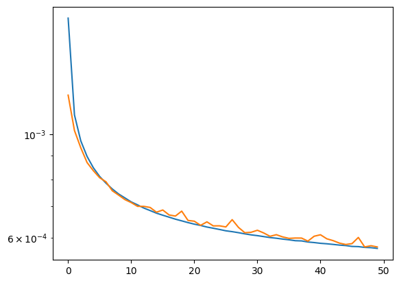
filepath_model = training_extname + "_regression"
tf.keras.models.save_model(model_r,filepath_model)
mypreds_r = model_r.predict(X_test,batch_size=1000)
1014/1014 [==============================] - 2s 2ms/step
fig,ax = plt.subplots(1,3,figsize=(7,2))
ax[0].hist(mypreds_r[:,0]/Y_r_test[:,0],bins=100, range=[0,2] )
ax[1].hist(mypreds_r[:,1]/Y_r_test[:,1],bins=100, range=[0,2] )
ax[2].hist(mypreds_r[:,2]/Y_r_test[:,2],bins=100, range=[0,2] )
plt.subplots_adjust(wspace=0.5)
plt.show()
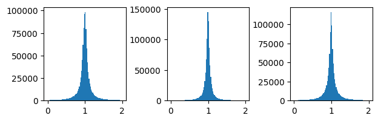
fig,ax = plt.subplots(1,3,figsize=(7,2))
ax[0].hist2d(mypreds_r[:,0],Y_r_test[:,0],bins=200, norm=mpl.colors.LogNorm(), range=([-2.5,2.5],[-2.5,2.5]))
ax[1].hist2d(mypreds_r[:,1],Y_r_test[:,1],bins=200, norm=mpl.colors.LogNorm(), range=([-2.5,2.5],[-2.5,2.5]))
ax[2].hist2d(mypreds_r[:,2],Y_r_test[:,2],bins=200, norm=mpl.colors.LogNorm(), range=([-2.5,2.5],[-2.5,2.5]))
plt.show()
fig,ax = plt.subplots(2,3,figsize=(7,3), sharex='col')
# define titles and x-labels
true_labels = ['log(x$_{true})$', 'log(Q$^2_{true})$', 'log(y$_{true})$']
pred_labels = ['log(x$_{pred.})$', 'log(Q$^2_{pred.})$', 'log(y$_{pred.})$']
ax[0][1].set_title("Comparison between true and predicted (scaled) kinematics") # title for the first row
for i in range(3):
ax[0][i].hist(Y_r_test[:,i], bins=100)
ax[0][i].set_xlabel(true_labels[i]) # x-label for the upper plots
ax[1][i].hist(mypreds_r[:,i], bins=100)
ax[1][i].set_xlabel(pred_labels[i]) # x-label for the lower plots
plt.subplots_adjust(wspace=0.45)
plt.show()
# Inverse transform to their unscaled values (i.e., before standard scaling)
inv_trans_Y = scalerY.inverse_transform(Y_r_test)
inv_trans_pred = scalerY.inverse_transform(mypreds_r)
true_vals = np.exp( inv_trans_Y)
pred_vals = np.exp( inv_trans_pred)
fig,ax = plt.subplots(2,3,figsize=(7,3), sharex='col')
# define titles and x-labels
true_labels = ['x$_{true}$', 'Q$^2_{true}$', 'y$_{true}$']
pred_labels = ['x$_{pred.}$', 'Q$^2_{pred.}$', 'y$_{pred.}$']
ax[0][1].set_title("Comparison between true and predicted kinematics") # title for the first row
for i in range(3):
ax[0][i].hist(true_vals[:,i], bins=100)
ax[0][i].set_xlabel(true_labels[i]) # x-label for the upper plots
ax[1][i].hist(pred_vals[:,i], bins=100)
ax[1][i].set_xlabel(pred_labels[i]) # x-label for the lower plots
ax[0][1].set_yscale('log')
ax[1][1].set_yscale('log')
plt.subplots_adjust(hspace=0.4)
plt.subplots_adjust(wspace=0.5)
plt.show()
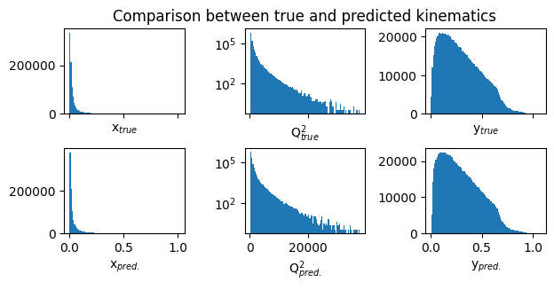
Plots of Ratio(pred/true) for target variables : transformed log(x), log(y), and log(Q2)#
fig, ax = plt.subplots(3,5, figsize=(12,6), sharey='row')
titles = ['log(x)$_{pred.}$/log(x)$_{true}$', 'log(Q$^2_{pred.}$)/log(Q$^2$)$_{true}$', 'log(y$_{pred.}$)/log(y$_{true}$)']
y_ranges = [
(0.5, 0.8),
(0.2, 0.5),
(0.1, 0.2),
(0.05, 0.1),
(0.01, 0.05)
]
for i in range(3):
for j in range(5):
y_min, y_max = y_ranges[j]
mask = (GY_test > y_min)*(GY_test < y_max)
ax[i][j].hist(mypreds_r[:,i][mask]/Y_r_test[mask][:,i],
density=True,bins=100,range=(0,2))
ax[i][j].axvline(1.0, color='red', lw=2, alpha=0.6)
ax[i][j].set_xlabel(titles[i]) # set column x-label
if i == 0:
ax[i][j].set_title(f'{y_min}<y$_{{true}}$<{y_max}')
plt.subplots_adjust(hspace=0.5)
plt.show()
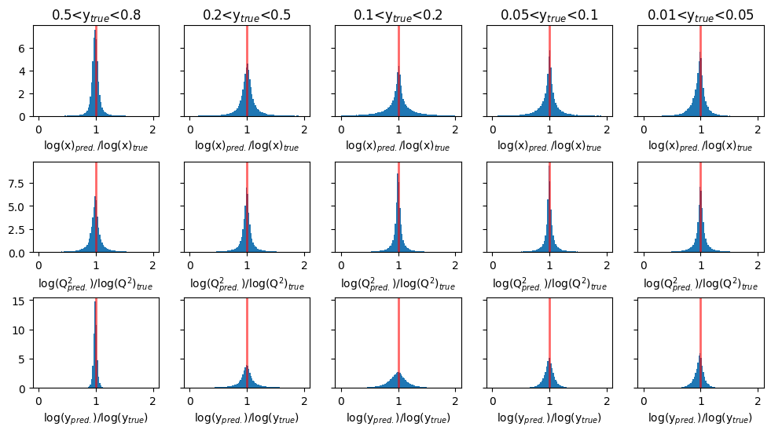
fig, ax = plt.subplots(3, 5, figsize=(12, 7))
titles = ['log(x)', 'log(Q$^2$)', 'log(y)']
y_ranges = [
(0.5, 0.8),
(0.2, 0.5),
(0.1, 0.2),
(0.05, 0.1),
(0.01, 0.05)
]
for i in range(3):
for j in range(5):
y_min, y_max = y_ranges[j]
mask = (GY_test > y_min)*(GY_test < y_max)
ax[i][j].hist2d(Y_r_test[mask][:,i],
mypreds_r[:,i][mask],
density=True,bins=200,range=([-3,3],[-3,3]),
norm=mpl.colors.LogNorm())
if i == 0:
ax[i][j].set_title(f'{y_min}<y$_{{true}}$<{y_max}')
ax[i][j].set_ylabel(titles[i] + ' pred.')
ax[i][j].set_xlabel(titles[i] + ' true')
plt.tight_layout()
plt.show()
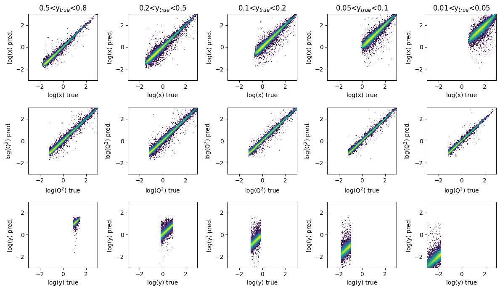
Plots of predicted and true physics variable : x#
fig,ax = plt.subplots(2,5,figsize=(14,5),sharex='col')
y_ranges = [(0.5, 0.8),(0.2, 0.5),(0.1, 0.2),(0.05, 0.1),(0.01, 0.05)]
for i in range(2):
for j in range(5):
y_min, y_max = y_ranges[j]
mask = (GY_test > y_min)*(GY_test < y_max)
if i == 0:
ax[i][j].hist(pred_vals[:,0][mask],density=True,bins=100,range=(0,1))
ax[i][j].set_title(f'{y_min}<y$_{{true}}$<{y_max}')
ax[i][j].set_xlabel('x$_{pred.}$')
else:
ax[i][j].hist(true_vals[:,0][mask],density=True,bins=100,range=(0,1))
ax[i][j].set_xlabel('x$_{true}$')
plt.show()
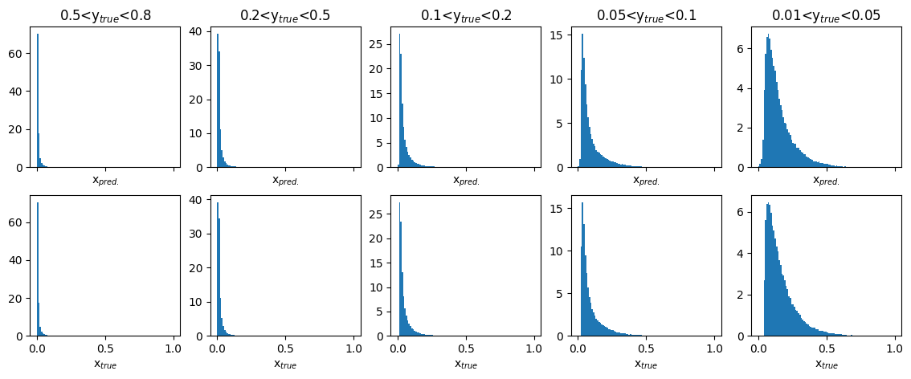
fig, ax = plt.subplots(1,5, figsize=(12,2))
y_ranges = [(0.5, 0.8), (0.2, 0.5), (0.1, 0.2), (0.05, 0.1), (0.01, 0.05)]
titles = ['$0.5<y_{true}<0.8$', '$0.2<y_{true}<0.5$', '$0.1<y_{true}<0.2$', '$0.05<y_{true}<0.1$', '$0.01<y_{true}<0.05$']
for i in range(5):
y_min, y_max = y_ranges[i]
mask = (GY_test > y_min) * (GY_test < y_max)
ax[i].hist2d(true_vals[:,0][mask], pred_vals[:,0][mask],
density=True, bins=200, range=([0,1],[0,1]), norm=mpl.colors.LogNorm())
ax[i].set_title(titles[i])
ax[i].set_xlabel('x true')
ax[i].set_ylabel('x pred.')
plt.subplots_adjust(wspace=0.4)
plt.show()
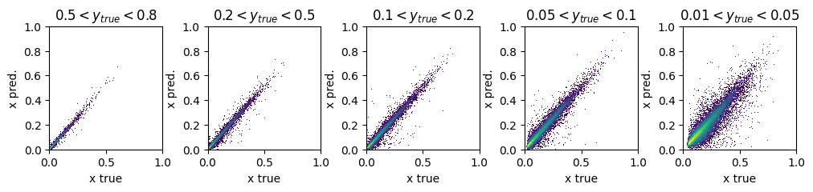
Plots of predicted and true physics variable : Q2#
fig, ax = plt.subplots(2, 5, figsize=(14, 5), sharex='col')
y_ranges = [(0.5, 0.8), (0.2, 0.5), (0.1, 0.2), (0.05, 0.1), (0.01, 0.05)]
xmax = 2000
titles = ['$0.5<y_{true}<0.8$', '$0.2<y_{true}<0.5$', '$0.1<y_{true}<0.2$', '$0.05<y_{true}<0.1$', '$0.01<y_{true}<0.05$']
x_labels = ['Q$^{2}_{pred.}$', 'Q$^{2}_{true}$']
for i in range(2):
for j in range(5):
y_min, y_max = y_ranges[j]
mask = (GY_test > y_min)*(GY_test < y_max)
ax[i][j].hist(pred_vals[:,1][mask] if i == 0 else true_vals[:,1][mask],
density=True, bins=100, range=(0, xmax))
if i==0:
ax[i][j].set_title(titles[j])
ax[i][j].set_xlabel(x_labels[i])
ax[i][j].tick_params(axis='y', labelsize=5) # adjust the fontsize of y-axis
plt.show()
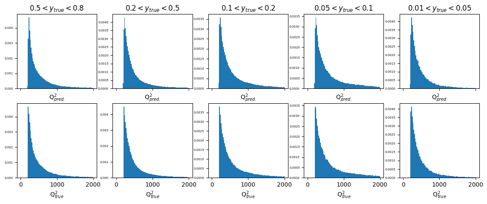
fig, ax = plt.subplots(1, 5, figsize=(14, 2))
axis_max = 2000
y_ranges = [(0.5, 0.8), (0.2, 0.5), (0.1, 0.2), (0.05, 0.1), (0.01, 0.05)]
titles = ['$0.5 < y_{true} < 0.8$', '$0.2 < y_{true} < 0.5$', '$0.1 < y_{true} < 0.2$', '$0.05 < y_{true} < 0.1$', '$0.01 < y_{true} < 0.05$']
x_label = 'Q$^{2}$ true'
y_label = 'Q$^{2}$ pred.'
for i in range(5):
y_min, y_max = y_ranges[i]
mask = (GY_test > y_min) * (GY_test < y_max)
ax[i].hist2d(true_vals[:, 1][mask], pred_vals[:, 1][mask],
density=True, bins=200, range=([0, axis_max], [0, axis_max]), norm=mpl.colors.LogNorm())
ax[i].set_title(titles[i])
ax[i].set_ylabel('Q$^{2}$ pred.')
ax[i].set_xlabel(x_label)
ax[i].set_xlabel(x_label, fontsize=12)
ax[i].set_ylabel(y_label, fontsize=12)
plt.subplots_adjust(wspace=0.6)
plt.show()
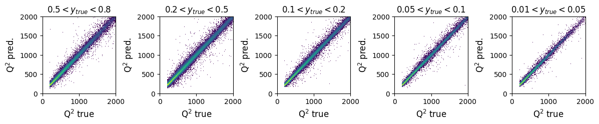
Plots of predicted and true physics variable : y#
fig, ax = plt.subplots(2, 5, figsize=(14, 5), sharex='col')
xmax = 1
y_ranges = [(0.5, 0.8), (0.2, 0.5), (0.1, 0.2), (0.05, 0.1), (0.01, 0.05)]
titles = ['$0.5 < y_{true} < 0.8$', '$0.2 < y_{true} < 0.5$', '$0.1 < y_{true} < 0.2$', '$0.05 < y_{true} < 0.1$', '$0.01 < y_{true} < 0.05$']
x_label = ['y$_{pred.}$','y$_{true}$']
for i in range(5):
y_min, y_max = y_ranges[i]
mask = (GY_test > y_min) * (GY_test < y_max)
ax[0][i].hist(pred_vals[:, 2][mask], density=True, bins=100, range=(0, xmax))
ax[1][i].hist(true_vals[:, 2][mask], density=True, bins=100, range=(0, xmax))
ax[0][i].set_title(titles[i])
ax[0][i].set_xlabel(x_label[0])
ax[1][i].set_xlabel(x_label[1])
plt.show()
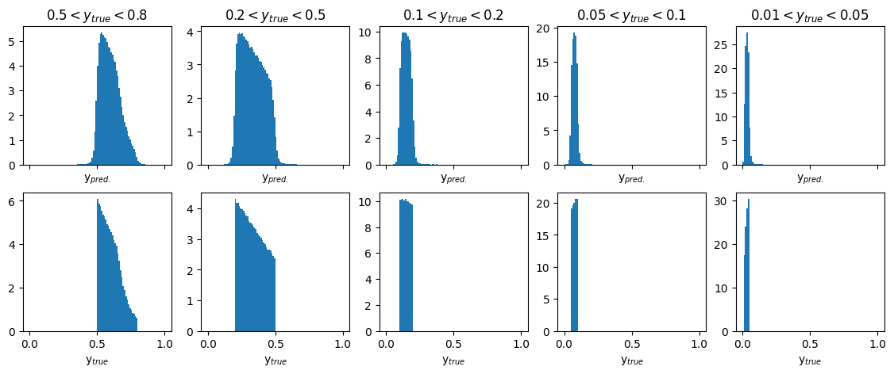
fig, ax = plt.subplots(1, 5, figsize=(14, 2))
axis_max = 1
y_ranges = [(0.5, 0.8), (0.2, 0.5), (0.1, 0.2), (0.05, 0.1), (0.01, 0.05)]
titles = ['$0.5 < y$_{true}$ < 0.8$', '$0.2 < y$_{true}$ < 0.5$', '$0.1 < y$_{true}$ < 0.2$', '$0.05 < y$_{true}$ < 0.1$', '$0.01 < y$_{true}$ < 0.05$']
x_label = 'y$_{true}$'
y_label = 'y$_{pred.}$'
for i in range(5):
y_min, y_max = y_ranges[i]
mask = (GY_test > y_min) * (GY_test < y_max)
ax[i].hist2d(true_vals[:, 2][mask], pred_vals[:, 2][mask], density=True, bins=200, range=([0, axis_max], [0, axis_max]), norm=mpl.colors.LogNorm())
ax[i].set_title(titles[i])
ax[i].set_xlabel(x_label)
ax[i].set_ylabel(y_label)
ax[i].set_xlabel(x_label, fontsize=12)
ax[i].set_ylabel(y_label, fontsize=12)
plt.subplots_adjust(wspace=0.5)
plt.show()
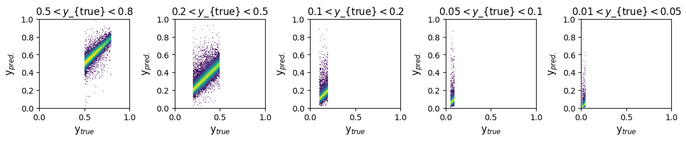
Plots of pred/true of physics variable x#
fig, ax = plt.subplots(1, 5, figsize=(13, 2), sharey='row')
xmin = 0.5
xmax = 1.5
y_ranges = [(0.5, 0.8), (0.2, 0.5), (0.1, 0.2), (0.05, 0.1), (0.01, 0.05)]
titles = ['$0.5 < y_{true} < 0.8$', '$0.2 < y_{true} < 0.5$', '$0.1 < y_{true} < 0.2$', '$0.05 < y_{true} < 0.1$', '$0.01 < y_{true} < 0.05$']
for i in range(5):
y_min, y_max = y_ranges[i]
mask = (GY_test > y_min) * (GY_test < y_max)
ax[i].hist(pred_vals[:, 0][mask] / true_vals[:, 0][mask], density=True, bins=100, range=(xmin, xmax))
ax[i].set_title(titles[i])
ax[i].axvline(1.0, color='red', lw=2, alpha=0.6)
ax[i].set_xlabel('x$_{pred.}$ / x$_{true}$')
plt.show()
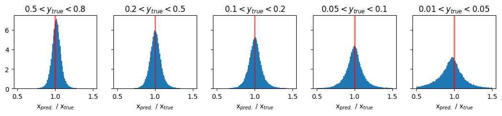
Plots of pred/true of physics variable Q2#
fig, ax = plt.subplots(1, 5, figsize=(13, 2), sharey='row')
xmin = 0.5
xmax = 1.5
y_ranges = [(0.5, 0.8), (0.2, 0.5), (0.1, 0.2), (0.05, 0.1), (0.01, 0.05)]
titles = ['$0.5 < y_{true} < 0.8$', '$0.2 < y_{true} < 0.5$', '$0.1 < y_{true} < 0.2$', '$0.05 < y_{true} < 0.1$', '$0.01 < y_{true} < 0.05$']
for i in range(5):
y_min, y_max = y_ranges[i]
mask = (GY_test > y_min) * (GY_test < y_max)
ax[i].hist(pred_vals[:, 1][mask] / true_vals[:, 1][mask], density=True, bins=100, range=(xmin, xmax))
ax[i].set_title(titles[i])
ax[i].axvline(1.0, color='red', lw=2, alpha=0.6)
ax[i].set_xlabel('Q$^{2}_{pred.}$ / Q$^{2}_{true}$')
plt.show()

Plots of pred/true of physics variable y#
fig, ax = plt.subplots(1, 5, figsize=(13, 2), sharey='row')
xmin = 0.5
xmax = 1.5
y_ranges = [(0.5, 0.8), (0.2, 0.5), (0.1, 0.2), (0.05, 0.1), (0.01, 0.05)]
titles = ['$0.5 < y_{true} < 0.8$', '$0.2 < y_{true} < 0.5$', '$0.1 < y_{true} < 0.2$', '$0.05 < y_{true} < 0.1$', '$0.01 < y_{true} < 0.05$']
for i in range(5):
y_min, y_max = y_ranges[i]
mask = (GY_test > y_min) * (GY_test < y_max)
ax[i].hist(pred_vals[:, 2][mask] / true_vals[:, 2][mask], density=True, bins=100, range=(xmin, xmax))
ax[i].set_title(titles[i])
ax[i].axvline(1.0, color='red', lw=2, alpha=0.6)
ax[i].set_xlabel('y$_{pred.}$ / y$_{true}$')
plt.show()
Comparison plots of resolution for methods vs DNN#
Resolution in x#
# y_ranges = [ (0.5, 0.8), (0.2, 0.5), (0.1, 0.2), (0.05, 0.1), (0.01, 0.05)] #---previously defined
mean_xratio = []
rms_xratio = []
def cal_mean_rms(bin_edges,counts, mean_l, rms_l):
bin_centers = 0.5 * (bin_edges[1:] + bin_edges[:-1])
mean = np.average(bin_centers, weights=counts)
rms = np.sqrt(np.average((bin_centers - mean) ** 2, weights=counts))
mean_l.append(mean)
rms_l.append(rms)
return mean_l, rms_l
methods_to_use = [4, 3, 0] # [5, 4, 3, 0]
methods_labels = ['Jacquet-Blondel', 'DA method', 'e method', 'Deep NN'] #'I$\Sigma$ method', 'Jacquet-Blondel', 'DA method', 'e method', 'Deep NN'
xmin = 0.0
xmax = 2.0
y_cut = ['from_tlv_gen_y>0.50 and from_tlv_gen_y<0.80','from_tlv_gen_y>0.20 and from_tlv_gen_y<0.50','from_tlv_gen_y>0.10 and from_tlv_gen_y<0.20','from_tlv_gen_y>0.05 and from_tlv_gen_y<0.10','from_tlv_gen_y>0.01 and from_tlv_gen_y<0.05']
fig, ax = plt.subplots(len(y_cut), len(methods_labels), figsize=(8, 8), sharey='row', sharex=True)
# the standard methods
for i in range(len(methods_to_use)):
mi = methods_to_use[i]
for yi in range(len(y_cut)):
counts, bin_edges, _ = ax[yi][i].hist(pandas_df.query(y_cut[yi])['obs_x[%d]' % mi] / pandas_df.query(y_cut[yi])['from_tlv_gen_x'],
density=True, bins=100, range=(xmin, xmax))
if(yi==0):
ax[yi][i].set_title(methods_labels[i])
mean_xratio, rms_xratio= cal_mean_rms(bin_edges,counts, mean_xratio, rms_xratio)
# the DNN method
for yi in range(len(y_cut)):
counts, bin_edges, _ = ax[yi][len(methods_to_use)].hist(pred_vals[:, 0][(GY_test > y_ranges[yi][0]) * (GY_test < y_ranges[yi][1])] / true_vals[:, 0][(GY_test > y_ranges[yi][0]) * (GY_test < y_ranges[yi][1])],
density=True, bins=100, range=(xmin, xmax))
ax[0][len(methods_to_use)].set_title('Deep NN')
mean_xratio, rms_xratio= cal_mean_rms(bin_edges,counts, mean_xratio, rms_xratio)
for yi, y_range in enumerate(y_ranges):
ax[yi][0].set_ylabel(f' ${y_range[0]} < y_{{true}} < {y_range[1]}$')
if(len(y_cut)>0):
for i in range(len(methods_to_use)+1):
ax[len(y_cut)-1][i].set_xlabel('x/$x_{true}$')
for i in range(len(y_cut)):
for j in range(len(methods_to_use)+1): # +1 to include DNN
ax[i][j].axvline(1.0, color='red', lw=2, alpha=0.6)
plt.subplots_adjust(wspace=0.1, hspace=0.1)
plt.show()
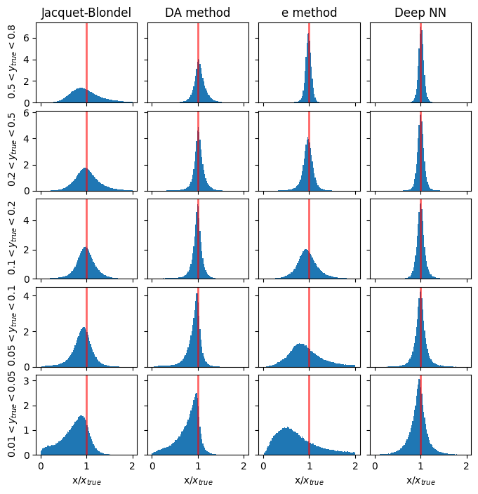
Resolution in Q2#
# y_ranges = [ (0.5, 0.8), (0.2, 0.5), (0.1, 0.2), (0.05, 0.1), (0.01, 0.05)] #---previously defined
mean_Q2ratio = []
rms_Q2ratio = []
methods_to_use = [4, 3, 0] # [5, 4, 3, 0]
methods_labels = ['Jacquet-Blondel', 'DA method', 'e method', 'Deep NN'] #'I$\Sigma$ method', 'Jacquet-Blondel', 'DA method', 'e method', 'Deep NN'
xmin = 0.5
xmax = 1.5
y_cut = ['from_tlv_gen_y>0.50 and from_tlv_gen_y<0.80','from_tlv_gen_y>0.20 and from_tlv_gen_y<0.50','from_tlv_gen_y>0.10 and from_tlv_gen_y<0.20','from_tlv_gen_y>0.05 and from_tlv_gen_y<0.10','from_tlv_gen_y>0.01 and from_tlv_gen_y<0.05']
fig, ax = plt.subplots(len(y_cut), len(methods_labels), figsize=(8, 8), sharey='row', sharex=True)
# the standard methods
for i in range(len(methods_to_use)):
mi = methods_to_use[i]
for yi in range(len(y_cut)):
counts, bin_edges, _ = ax[yi][i].hist(pandas_df.query(y_cut[yi])['obs_Q2[%d]' % mi] / pandas_df.query(y_cut[yi])['from_tlv_gen_Q2'],
density=True, bins=100, range=(xmin, xmax))
if(yi==0):
ax[yi][i].set_title(methods_labels[i])
mean_Q2ratio, rms_Q2ratio= cal_mean_rms(bin_edges,counts, mean_Q2ratio, rms_Q2ratio)
# the DNN method
for yi in range(len(y_cut)):
counts, bin_edges, _ = ax[yi][len(methods_to_use)].hist(pred_vals[:, 0][(GY_test > y_ranges[yi][0]) * (GY_test < y_ranges[yi][1])] / true_vals[:, 0][(GY_test > y_ranges[yi][0]) * (GY_test < y_ranges[yi][1])],
density=True, bins=100, range=(xmin, xmax))
ax[0][len(methods_to_use)].set_title('Deep NN')
mean_Q2ratio, rms_Q2ratio= cal_mean_rms(bin_edges,counts, mean_Q2ratio, rms_Q2ratio)
for yi, y_range in enumerate(y_ranges):
ax[yi][0].set_ylabel(f' ${y_range[0]} < y_{{true}} < {y_range[1]}$')
if(len(y_cut)>0):
for i in range(len(methods_to_use)+1):
ax[len(y_cut)-1][i].set_xlabel('Q$^2$/Q$^2_{true}$')
for i in range(len(y_cut)):
for j in range(len(methods_to_use)+1): # +1 to include DNN
ax[i][j].axvline(1.0, color='red', lw=2, alpha=0.6)
plt.subplots_adjust(wspace=0.1, hspace=0.1)
plt.show()
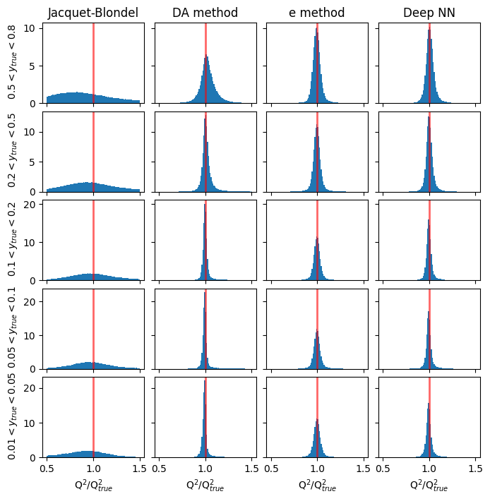
Resolution in y#
# y_ranges = [ (0.5, 0.8), (0.2, 0.5), (0.1, 0.2), (0.05, 0.1), (0.01, 0.05)] #---previously defined
mean_yratio = []
rms_yratio = []
methods_to_use = [4, 3, 0] # [5, 4, 3, 0]
methods_labels = ['Jacquet-Blondel', 'DA method', 'e method', 'Deep NN'] #'I$\Sigma$ method', 'Jacquet-Blondel', 'DA method', 'e method', 'Deep NN'
xmin = 0.5
xmax = 1.5
y_cut = ['from_tlv_gen_y>0.50 and from_tlv_gen_y<0.80','from_tlv_gen_y>0.20 and from_tlv_gen_y<0.50','from_tlv_gen_y>0.10 and from_tlv_gen_y<0.20','from_tlv_gen_y>0.05 and from_tlv_gen_y<0.10','from_tlv_gen_y>0.01 and from_tlv_gen_y<0.05']
fig, ax = plt.subplots(len(y_cut), len(methods_labels), figsize=(8, 8), sharey='row', sharex=True)
# the standard methods
for i in range(len(methods_to_use)):
mi = methods_to_use[i]
for yi in range(len(y_cut)):
counts, bin_edges, _ = ax[yi][i].hist(pandas_df.query(y_cut[yi])['obs_y[%d]' % mi] / pandas_df.query(y_cut[yi])['from_tlv_gen_y'],
density=True, bins=100, range=(xmin, xmax))
if(yi==0):
ax[yi][i].set_title(methods_labels[i])
mean_yratio, rms_yratio= cal_mean_rms(bin_edges,counts, mean_yratio, rms_yratio)
# the DNN method
for yi in range(len(y_cut)):
counts, bin_edges, _ = ax[yi][len(methods_to_use)].hist(pred_vals[:, 0][(GY_test > y_ranges[yi][0]) * (GY_test < y_ranges[yi][1])] / true_vals[:, 0][(GY_test > y_ranges[yi][0]) * (GY_test < y_ranges[yi][1])],
density=True, bins=100, range=(xmin, xmax))
ax[0][len(methods_to_use)].set_title('Deep NN')
mean_yratio, rms_yratio= cal_mean_rms(bin_edges,counts, mean_yratio, rms_yratio)
for yi, y_range in enumerate(y_ranges):
ax[yi][0].set_ylabel(f' ${y_range[0]} < y_{{true}} < {y_range[1]}$')
if(len(y_cut)>0):
for i in range(len(methods_to_use)+1):
ax[len(y_cut)-1][i].set_xlabel('$y/y_{true}$')
for i in range(len(y_cut)):
for j in range(len(methods_to_use)+1): # +1 to include DNN
ax[i][j].axvline(1.0, color='red', lw=2, alpha=0.6)
plt.subplots_adjust(wspace=0.1, hspace=0.1)
plt.show()
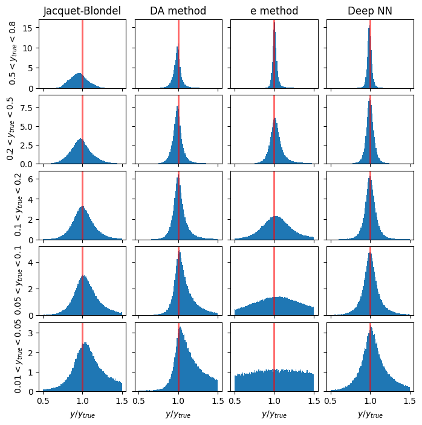
Plotting the results as a function of y#
# convert to numpy arrays for manipulation
# methods: 'Jacquet-Blondel', 'DA method', 'e method', 'Deep NN'
y_ranges = [ (0.5, 0.8), (0.2, 0.5), (0.1, 0.2), (0.05, 0.1), (0.01, 0.05)] #---previously defined
ykin = []
err_ykin = []
for values in y_ranges:
tmp = 0.5*(values[0]+values[1])
ykin.append(tmp)
tmp = abs(values[1]-values[0])
err_ykin.append(tmp/np.sqrt(12.))
ykin = np.array(ykin)
err_ykin = np.array(err_ykin)
meanx_jb = np.array(mean_xratio[0:5])
errx_jb = np.array(rms_xratio[0:5])
meanx_da = np.array(mean_xratio[5:10])
errx_da = np.array(rms_xratio[5:10])
meanx_e = np.array(mean_xratio[10:15])
errx_e = np.array(rms_xratio[10:15])
meanx_dnn = np.array(mean_xratio[15:20])
errx_dnn = np.array(rms_xratio[15:20])
plt.scatter(ykin, meanx_jb, color='b', label='Jacquet-Blondel - x')
plt.errorbar(ykin, meanx_jb, xerr=err_ykin, yerr=errx_jb, fmt='o', color='b', ecolor='b', elinewidth=1, capsize=2) #label='uncertainty'
plt.scatter(ykin, meanx_da, color='k', label='DA method - x')
plt.errorbar(ykin, meanx_da, xerr=err_ykin, yerr=errx_da, fmt='o', color='k', ecolor='k', elinewidth=1, capsize=2)
plt.scatter(ykin, meanx_e, color='m', label='electron method - x')
plt.errorbar(ykin, meanx_e, xerr=err_ykin, yerr=errx_e, fmt='o', color='m', ecolor='m', elinewidth=1, capsize=2)
plt.scatter(ykin, meanx_dnn, color='r', label='DNN - x')
plt.errorbar(ykin, meanx_dnn, xerr=err_ykin, yerr=errx_dnn, fmt='o', color='r', ecolor='r', elinewidth=1, capsize=2, linestyle=':')
plt.xlabel('y',fontsize=15)
plt.ylabel('pred. x/true x',fontsize=15)
plt.ylim(0.,2.)
plt.title('Predicted vs true reconstructed quantities in DIS')
plt.legend()
plt.grid(True)
plt.show()
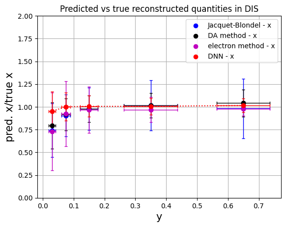
# convert to numpy arrays for manipulation
# methods: 'Jacquet-Blondel', 'DA method', 'e method', 'Deep NN'
y_ranges = [ (0.5, 0.8), (0.2, 0.5), (0.1, 0.2), (0.05, 0.1), (0.01, 0.05)] #---previously defined
meanQ2_jb = np.array(mean_Q2ratio[0:5])
errQ2_jb = np.array(rms_Q2ratio[0:5])
meanQ2_da = np.array(mean_Q2ratio[5:10])
errQ2_da = np.array(rms_Q2ratio[5:10])
meanQ2_e = np.array(mean_Q2ratio[10:15])
errQ2_e = np.array(rms_Q2ratio[10:15])
meanQ2_dnn = np.array(mean_Q2ratio[15:20])
errQ2_dnn = np.array(rms_Q2ratio[15:20])
plt.scatter(ykin, meanQ2_jb, color='b', label='Jacquet-Blondel - Q$^{2}$')
plt.errorbar(ykin, meanQ2_jb, xerr=err_ykin, yerr=errQ2_jb, fmt='o', color='b', ecolor='b', elinewidth=1, capsize=2) #label='uncertainty'
plt.scatter(ykin, meanQ2_da, color='k', label='DA method - Q$^{2}$')
plt.errorbar(ykin, meanQ2_da, xerr=err_ykin, yerr=errQ2_da, fmt='o', color='k', ecolor='k', elinewidth=1, capsize=2)
plt.scatter(ykin, meanQ2_e, color='m', label='electron method - Q$^{2}$')
plt.errorbar(ykin, meanQ2_e, xerr=err_ykin, yerr=errQ2_e, fmt='o', color='m', ecolor='m', elinewidth=1, capsize=2)
plt.scatter(ykin, meanQ2_dnn, color='r', label='DNN - Q$^{2}$')
plt.errorbar(ykin, meanQ2_dnn, xerr=err_ykin, yerr=errQ2_dnn, fmt='o', color='r', ecolor='r', elinewidth=1, capsize=2, linestyle=':')
plt.xlabel('y',fontsize=15)
plt.ylabel('pred. Q$^{2}$/true Q$^{2}$',fontsize=15)
plt.ylim(0.,2.)
plt.title('Predicted vs true reconstructed quantities in DIS')
plt.legend()
plt.grid(True)
plt.show()
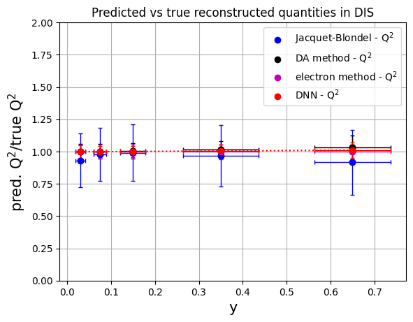
# convert to numpy arrays for manipulation
# methods: 'Jacquet-Blondel', 'DA method', 'e method', 'Deep NN'
y_ranges = [ (0.5, 0.8), (0.2, 0.5), (0.1, 0.2), (0.05, 0.1), (0.01, 0.05)] #---previously defined
meany_jb = np.array(mean_yratio[0:5])
erry_jb = np.array(rms_yratio[0:5])
meany_da = np.array(mean_yratio[5:10])
erry_da = np.array(rms_yratio[5:10])
meany_e = np.array(mean_yratio[10:15])
erry_e = np.array(rms_yratio[10:15])
meany_dnn = np.array(mean_yratio[15:20])
erry_dnn = np.array(rms_yratio[15:20])
plt.scatter(ykin, meany_jb, color='b', label='Jacquet-Blondel - y')
plt.errorbar(ykin, meany_jb, xerr=err_ykin, yerr=erry_jb, fmt='o', color='b', ecolor='b', elinewidth=1, capsize=2) #label='uncertainty'
plt.scatter(ykin, meany_da, color='k', label='DA method - y')
plt.errorbar(ykin, meany_da, xerr=err_ykin, yerr=erry_da, fmt='o', color='k', ecolor='k', elinewidth=1, capsize=2)
plt.scatter(ykin, meany_e, color='m', label='electron method - y')
plt.errorbar(ykin, meany_e, xerr=err_ykin, yerr=erry_e, fmt='o', color='m', ecolor='m', elinewidth=1, capsize=2)
plt.scatter(ykin, meany_dnn, color='r', label='DNN - y')
plt.errorbar(ykin, meany_dnn, xerr=err_ykin, yerr=erry_dnn, fmt='o', color='r', ecolor='r', elinewidth=1, capsize=2, linestyle=':')
plt.xlabel('y',fontsize=15)
plt.ylabel('pred. y/true y',fontsize=15)
plt.ylim(0.,2.)
plt.title('Predicted vs true reconstructed quantities in DIS')
plt.legend()
plt.grid(True)
plt.show()
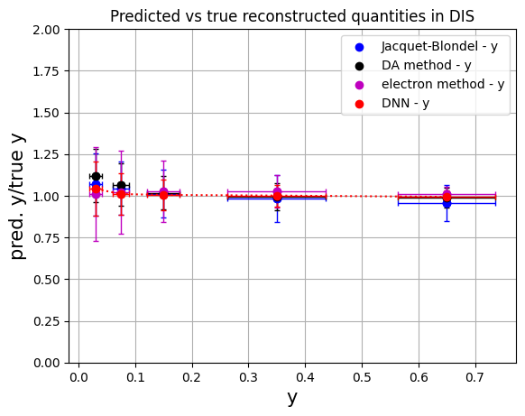